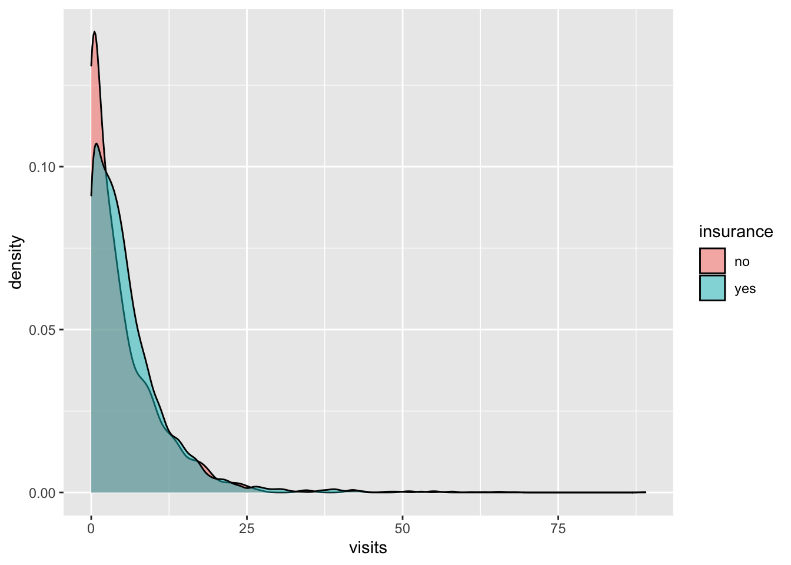

Chapter 10 Panel data
10.1 パッケージ
library(tidyverse)
library(estimatr)
library(AER)
library(did) # weighted two-way fixed effect10.2 Data
AERパッケージに含まれるパネルデータPSID7682を利用
- 595名の回答者について、1976年から1983年までの7期間パネルデータ
data("PSID7682")
data <-
PSID7682 %>%
group_by(id) %>%
mutate(period = as.numeric(year), # yearを連続変数化
treatment.time = if_else(married == "yes",
period,
999),
treatment.time = min(treatment.time)
) %>% # 結婚したperiodを作成(結婚しなかったサンプル = 9999)
ungroup- 記述統計
table(data$treatment.time)##
## 1 2 3 4 5 6 7 999
## 3430 21 21 28 14 14 7 63010.3 Two-way fixed effect model in the two-by-two case
- 2時点・2グループデータ
data %>%
filter(period <= 2) %>%
filter(treatment.time == 999 |
treatment.time == 2) %>%
mutate(D = if_else(period >= treatment.time,
1,
0)
) %>%
lm_robust(weeks ~
D +
factor(period),
data = .,
clusters = id,
fixed_effects = id)## Estimate Std. Error t value Pr(>|t|) CI Lower CI Upper
## D -1.066667 1.2271177 -0.8692456 0.4713004 -6.0381262 3.904793
## factor(period)2 1.400000 0.8532526 1.6407803 0.1043726 -0.2953947 3.095395
## DF
## D 2.135502
## factor(period)2 89.00000010.3.1 Two-way fixed effect model
- 2時点・2グループデータ
data %>%
filter(treatment.time != 1) %>%
mutate(D = if_else(period >= treatment.time,
1,
0)
) %>%
lm_robust(weeks ~
D +
factor(period),
data = .,
clusters = id,
fixed_effects = id)## Estimate Std. Error t value Pr(>|t|) CI Lower
## D -1.3441261 0.9883721 -1.3599393 0.19308228 -3.44285296
## factor(period)2 1.2860226 0.7603302 1.6914001 0.09375711 -0.22175334
## factor(period)3 1.2006167 0.8110553 1.4803143 0.14182617 -0.40782221
## factor(period)4 1.6994406 0.8298055 2.0479986 0.04311393 0.05364326
## factor(period)5 1.1250430 0.8943547 1.2579382 0.21127972 -0.64885674
## factor(period)6 1.1601692 0.7989700 1.4520811 0.14954881 -0.42458789
## factor(period)7 0.6872561 0.9249401 0.7430277 0.45917657 -1.14740654
## CI Upper DF
## D 0.7546008 15.68082
## factor(period)2 2.7937986 103.92618
## factor(period)3 2.8090557 103.53046
## factor(period)4 3.3452379 102.61302
## factor(period)5 2.8989427 102.23349
## factor(period)6 2.7449263 101.97890
## factor(period)7 2.5219188 101.7763510.4 Weighted two-way fixed effect model
fit <-
data %>%
filter(treatment.time != 1) %>%
mutate(id = as.numeric(id),
treatment.time = if_else(treatment.time == 999,
0,
treatment.time)
) %>%
att_gt(yname = "weeks",
tname = "period",
idname = "id",
gname = "treatment.time",
data = .,
control_group = 999)
fit##
## Call:
## att_gt(yname = "weeks", tname = "period", idname = "id", gname = "treatment.time",
## data = ., control_group = 999)
##
## Reference: Callaway, Brantly and Pedro H.C. Sant'Anna. "Difference-in-Differences with Multiple Time Periods." Forthcoming at the Journal of Econometrics <https://arxiv.org/abs/1803.09015>, 2020.
##
## Group-Time Average Treatment Effects:
## Group Time ATT(g,t) Std. Error [95% Simult. Conf. Band]
## 2 2 -0.9412 1.0440 -4.5379 2.6555
## 2 3 -2.5455 2.0798 -9.7108 4.6199
## 2 4 -8.8526 6.9857 -32.9196 15.2144
## 2 5 -8.2151 8.9253 -38.9641 22.5340
## 2 6 -1.5055 1.1957 -5.6248 2.6138
## 2 7 -2.2556 1.8071 -8.4814 3.9703
## 3 2 -2.3434 0.8775 -5.3666 0.6798
## 3 3 1.7980 0.6727 -0.5196 4.1155
## 3 4 0.7228 1.3776 -4.0234 5.4690
## 3 5 1.0538 0.8617 -1.9150 4.0225
## 3 6 0.2125 1.3025 -4.2750 4.6999
## 3 7 1.8111 1.8058 -4.4103 8.0326
## 4 2 2.5765 5.3594 -15.8876 21.0406
## 4 3 0.6579 1.8960 -5.8740 7.1898
## 4 4 -2.7684 1.3150 -7.2988 1.7620
## 4 5 -1.0860 1.8005 -7.2889 5.1168
## 4 6 -6.8489 7.7247 -33.4617 19.7639
## 4 7 0.5833 1.0646 -3.0844 4.2510
## 5 2 -1.3000 0.7962 -4.0429 1.4429
## 5 3 -0.8866 0.9688 -4.2244 2.4512
## 5 4 -0.2742 0.6891 -2.6483 2.0999
## 5 5 -0.3118 0.8798 -3.3429 2.7193
## 5 6 -3.4286 5.7233 -23.1462 16.2890
## 5 7 0.5222 0.6847 -1.8368 2.8813
## 6 2 -5.3800 2.3431 -13.4524 2.6924
## 6 3 -7.5206 2.1083 -14.7841 -0.2571 *
## 6 4 4.8333 3.1020 -5.8537 15.5204
## 6 5 6.3242 3.2352 -4.8217 17.4701
## 6 6 -6.2527 2.2240 -13.9148 1.4093
## 6 7 -2.3222 1.0213 -5.8409 1.1965
## 7 2 -1.2871 0.7780 -3.9675 1.3932
## 7 3 0.1327 0.6173 -1.9942 2.2595
## 7 4 -1.7872 0.5534 -3.6937 0.1192
## 7 5 1.7065 0.5015 -0.0212 3.4343
## 7 6 -2.2778 0.6086 -4.3745 -0.1811 *
## 7 7 0.9556 0.5151 -0.8189 2.7300
## ---
## Signif. codes: `*' confidence band does not cover 0
##
## P-value for pre-test of parallel trends assumption: 0
## Control Group: , Anticipation Periods: 0
## Estimation Method: Doubly Robustaggte(fit,
type = "simple") %>%
summary##
## Call:
## aggte(MP = fit, type = "simple")
##
## Reference: Callaway, Brantly and Pedro H.C. Sant'Anna. "Difference-in-Differences with Multiple Time Periods." Forthcoming at the Journal of Econometrics <https://arxiv.org/abs/1803.09015>, 2020.
##
##
## Overall ATT:
## ATT Std. Error [95% Conf. Int.]
## -1.9877 1.1881 -4.3164 0.3409
##
##
## ---
## Signif. codes: `*' confidence band does not cover 0
##
## Control Group: , Anticipation Periods: 0
## Estimation Method: Doubly Robustaggte(fit,
type = "dynamic") %>%
ggdid